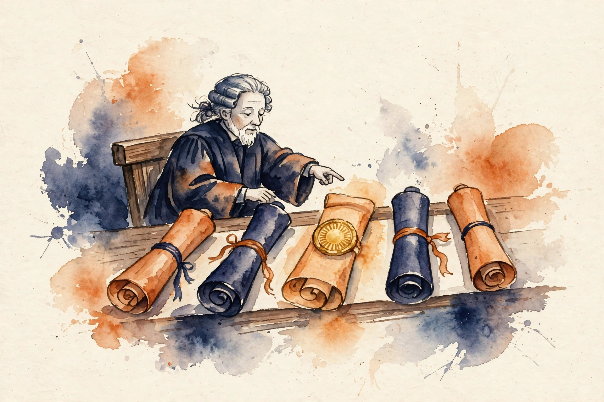

Narrated from the lesson document
One model, one hard question. Do you ask once, or ask five times and keep the best? This companion walks the full arc of Unit 01: from the math of repeated sampling to the judge that picks the winner, and from weak verifiers to the cost curve that prices the whole plan.
From the lesson The idea, and every number beside it, comes from the cited section of u01_test_time_compute.md. The phrasing is the companion’s.
Illustration Invented by the companion: an analogy, a toy with made-up values, or a what-if. Never lecture content.
companion Companion voice: the idea above the tag is from the lesson. The generalization below it is the companion’s.
Provenance: no full lecture transcript exists for sessions 2 and 3. This page narrates the lesson document content/v2/cs329a/lessons/u01_test_time_compute.md, not a video. Paper titles come from the official schedule through the lesson. The builder did not inspect paper contents. Toy numbers are the lesson’s own computed values, re-plotted here with section citations. Claim class: SOURCE ATTRIBUTION PENDING on paper pointers. Toys are computed and traceable.
Section 1 · C01
From the lessonC01 §2, §3
One model faces one hard question. Ask once, or ask five times and keep the best answer? Each sample is a lottery ticket. The prize goes to the set, not the ticket: the set wins if any ticket wins. More tickets raise the win chance. Each new ticket adds less than the one before.
From the lessonC01 §5
The formula is pass@N = 1 − (1 − p)^N. P(all N fail) = (1 − p)^N by independence. The event of at least one success is the complement. Independence is the load-bearing assumption. It fails when the decoding policy is deterministic, or when samples share a systematic error.
From the lessonC01 §5 Move the sliders. The toy runs the lesson’s rule live. Watch the last ticket’s gain shrink as N grows.
From the lessonC01 §5 Live pass@N: the C01 rule, applied to your p and N.
From the lessonC01 §6
The lesson’s computed table for p = 0.25. The audit row for the rule above.
| N | pass@N | Gain of ticket N |
|---|---|---|
| 1 | 0.2500 | 0.2500 |
| 2 | 0.4375 | 0.1875 |
| 3 | 0.5781 | 0.1406 |
| 4 | 0.6836 | 0.1055 |
| 5 | 0.7627 | 0.0791 |
| 6 | 0.8220 | 0.0593 |
| 7 | 0.8665 | 0.0445 |
| 8 | 0.8999 | 0.0334 |
Diminishing returns are visible in the numbers. The step from ticket 1 to ticket 2 adds 0.1875. The step from ticket 7 to ticket 8 adds 0.0334.
Section 2 · C02
From the lessonC02 §3, §5
Best-of-N samples N completions, scores each with a verifier, and returns the argmax. It is an election with one voter and N candidates. A wise voter picks the best candidate. A biased voter picks the loudest one.
From the lessonC02 §5
With a perfect verifier, best-of-N equals pass@N. With a noisy verifier it falls short. The gap is the verifier error folded through the argmax. The mechanism works when score order matches correctness order often enough.

From the lessonC02 §6 Four samples, fixed correctness [1, 0, 0, 1]. Flip the verifier and watch the winner change.
The same samples, two verifiers, two outcomes. Fix the scores and the winner flips from wrong to right.
Section 3 · C03
From the lessonC03 §3, §5
Sample N reasoning paths. Extract the final answer from each. Return the majority answer. No verifier needed. Diverse paths that converge signal a stable answer.
From the lessonC03 §5
The Condorcet intuition: many weak but better-than-chance votes beat one vote. It needs p greater than 0.5 per path, and errors that scatter instead of marching together. Both are assumptions to check, not gifts.
From the lessonC03 §6 Two vote toys. The lesson’s toy, then the tie that shows why the tie rule is part of the method.
Agreement measures path similarity, not truth. Five paths can agree and all be wrong.
Section 4 · C04
From the lessonC04 §2, §3
Inference is a machine with dials: sample count, verifier choice, voting rule, temperature. Architecture search turns the dials per task and keeps the setting that scores best on a validation set.
From the lessonC04 §2, §6
The toy: two tasks, two recipes. R1 is best-of-8. R2 is self-consistency with 16 paths. On math, R1 scores 0.70 and R2 scores 0.78. On code, R1 scores 0.66 and R2 scores 0.55. No single recipe wins both. A fixed R1 averages 0.68 across tasks. The per-task pick averages 0.72. Gain: 0.04 absolute.
From the lessonC04 §11
Read the margin with care. R2 beats R1 on math validation 0.78 to 0.70, on 40 questions. The standard error is about 0.07. The gap is noise, and locking R2 on this evidence is a gamble.
Turn the dials per task, but report the margin, not just the winner.
Section 5 · C05 and C12
From the lessonC05 §3, §6
A budget is a pie. Samples are slices. A better verifier is a sharper knife: fewer slices, cleaner cuts. The best split depends on how fast extra slices stop helping.
From the lessonC05 §6
The toy: 100 cost units per query. Cheap plan: N = 20, verifier accuracy 0.70, success 0.69778. Strong plan: N = 8, verifier accuracy 0.90, success 0.80991. The strong plan wins on the toy: 0.8099 beats 0.6978.
From the lessonC12 §2 Move the budget slider. The toy evaluates the lesson’s cost-success formula at your budget.
From the lessonC12 §11
The smooth curve between integer budgets is a drawing aid, not a claim. Real verifier accuracy can fall as N rises, which would bend the high-budget end down.
A sharper knife beats more slices, on this toy. Twenty cheap samples lose to eight well-judged ones.
Read the crossing, not the peak. The winner at budget 50 loses at budget 100.
Section 6 · C06 and C07
From the lessonC06 §3, §6
Writing a proof is hard. Checking a proof is easier. The gap is the distance between the two skills. A weak checker still beats no checker when the candidate set already holds the answer.
From the lessonC06 §6
The toy: generator p = 0.30, N = 10. pass@10 = 1 − 0.7^10 = 0.97175. Weak verifier accuracy 0.65. Best-of-10 estimate: 0.97175 × 0.65 = 0.63164. The weak verifier lifts 0.30 to 0.63, an absolute gain of 0.33 from a verifier weaker than the generator.
From the lessonC07 §2, §4
The 70B generator with the 1B judge: p = 0.35, N = 16, verifier accuracy 0.62. pass@16 = 1 − 0.65^16 = 0.99898. Estimate: 0.99898 × 0.62 = 0.61937. Gain over the single sample: 0.27. Two conditions carry the result: the verifier beats chance on the pile, and its errors do not mirror the generator’s errors.
From the lessonC07 §6
A cost toy in the same section: budget 100, generation cost 4. Strong verifier at cost 8 and accuracy 0.90: N = 8, success 0.87133. Weak verifier at cost 1 and accuracy 0.62: N = 20, success 0.61989. The strong judge wins on the toy, but the weak judge stays deployable under a latency cap.
A weak checker still beats no checker. Coverage from the generator plus discrimination from the judge beats either alone.
Weakness is acceptable under two conditions: the judge beats chance on the pile, and its errors stay uncorrelated with the generator’s.
Section 7 · C08
From the lessonC08 §2, §3
Outcome reward grades the final exam. Process reward grades the homework along the way. The exam is cheap to grade. The homework grade teaches better habits but needs a teacher for every step.
| Step | Correct | Process reward |
|---|---|---|
| 1 | 1 | 1.0 |
| 2 | 0 | 0.0 |
| 3 | 1 | 1.0 |
| 4 | 1 | 1.0 |
From the lessonC08 §6
The tradeoff in numbers: 100 traces, 40 end correct. Suppose 10 of the 40 have a flawed middle step. With human step labels at 0.95 accuracy, about 2 of the 40 correct traces get a wrong step mark. The dense signal is richer per trace and noisier per label.
Dense signal teaches faster and lies more often. Each step label is a new chance to inject bias.
Section 8 · C09 and C10
From the lessonC09 §3, §5
Where does the verifier’s score come from? A verifier is a classifier: input a solution, output P(correct). Train it like any classifier, on solutions labeled by an oracle. Its exam is the solutions it will judge at deployment.
From the lessonC09 §5, §6
The loss is binary cross-entropy, the negative log-likelihood of a Bernoulli model. The toy scorer is logit = w1 × E − w2 × (L / 100), with L the length and E the equation count. Three samples give loss contributions 0.0715, 0.5978, 0.0315. Mean: 0.2336.
| Sample | L | E | Label | Score | Loss |
|---|---|---|---|---|---|
| 1 | 40 | 3 | 1 | 0.931 | 0.0715 |
| 2 | 120 | 1 | 0 | 0.450 | 0.5978 |
| 3 | 55 | 4 | 1 | 0.969 | 0.0315 |
From the lessonC09 §11
The load-bearing assumption is distribution match. Train on short human solutions and deploy on long model samples, and the verifier trusts brevity and rejects good long solutions.
From the lessonC10 §3, §6
The verifier says 0.9. Is it right 90 percent of the time? A forecaster who says 90 percent and lands 60 percent is miscalibrated. Selection needs ranking. Decision thresholds need calibration.
The judge’s exam must match its deployment. A verifier trained on human solutions and deployed on model samples faces shift.
A score of 0.9 must mean 0.9. Ranking well is not the same as telling the truth.
Section 9 · C11
From the lessonC11 §3, §5
A judge who rewards height picks the tallest contestant, not the best singer. Selection bias is the judge’s taste leaking into the verdict. The samples did not change. The ruler did.
| Sample | Correct | Length | Score = length / 200 |
|---|---|---|---|
| 1 | 1 | 30 | 0.15 |
| 2 | 0 | 120 | 0.60 |
| 3 | 0 | 150 | 0.75 |
| 4 | 0 | 200 | 1.00 |
From the lessonC11 §5
Write score s = q + w × z, with q the quality signal and z the bias feature. As N grows, the max of z over the set grows too, while max q caps at 1. Selection bias gets worse with N: larger candidate sets give the bias more room to dominate.
Bigger candidate sets give bias more room to dominate. The bias term wins more often as N grows.
Section 10 · The arc
The arc, end to end. Repeated sampling turns one model into many chances, and the math prices each new ticket (C01). Best-of-N converts coverage into one answer, and the verifier decides the winner (C02). Majority vote works without any verifier, while errors stay diverse (C03). No recipe wins every task, so search the dials per task (C04). Split the budget between samples and judge quality, and read the crossing (C05, C12). Checking is easier than writing, so even a weak verifier lifts the result (C06, C07). Grade the steps or the outcome, and know what each choice costs (C08). Train the judge on labeled solutions, then check that its scores mean what they say (C09, C10). And watch the judge’s taste: selection amplifies bias, and bigger sets amplify it more (C11).
companion Where the unit points next: the lesson defers policy gradients and advantage to U03. The verifier machinery built here returns as execution feedback in U02 and as reward design in U03.
Wisdom index
Each nugget states the idea in plain words, why it matters, and the transferable principle. Every one is anchored to its lesson section.